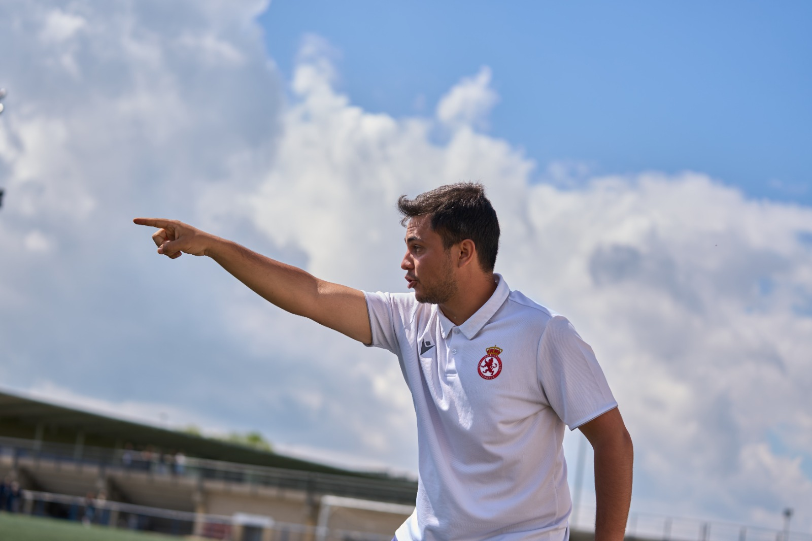

Análisis táctico y scouting de selecciones para el Mundial 2026

Soy Alejandro Aller Lera, friki de fútbol. En este espacio os compartiré información y análisis que he recopilado de varias selecciones que participarán en este mundial. Estos análisis va para mi gente del Desmadre que sé que os encantan
Accede a los análisis individuales de cada selección nacional. El contenido se irá ampliando progresivamente hasta el inicio del Mundial 2026.
Ir a selecciones